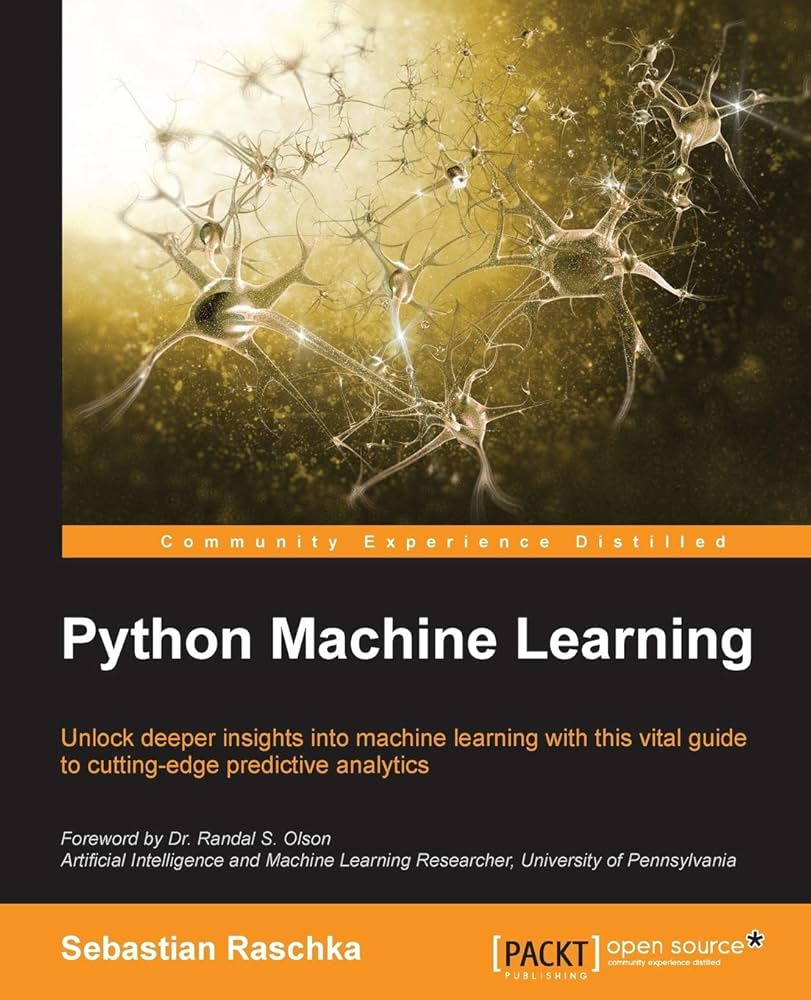
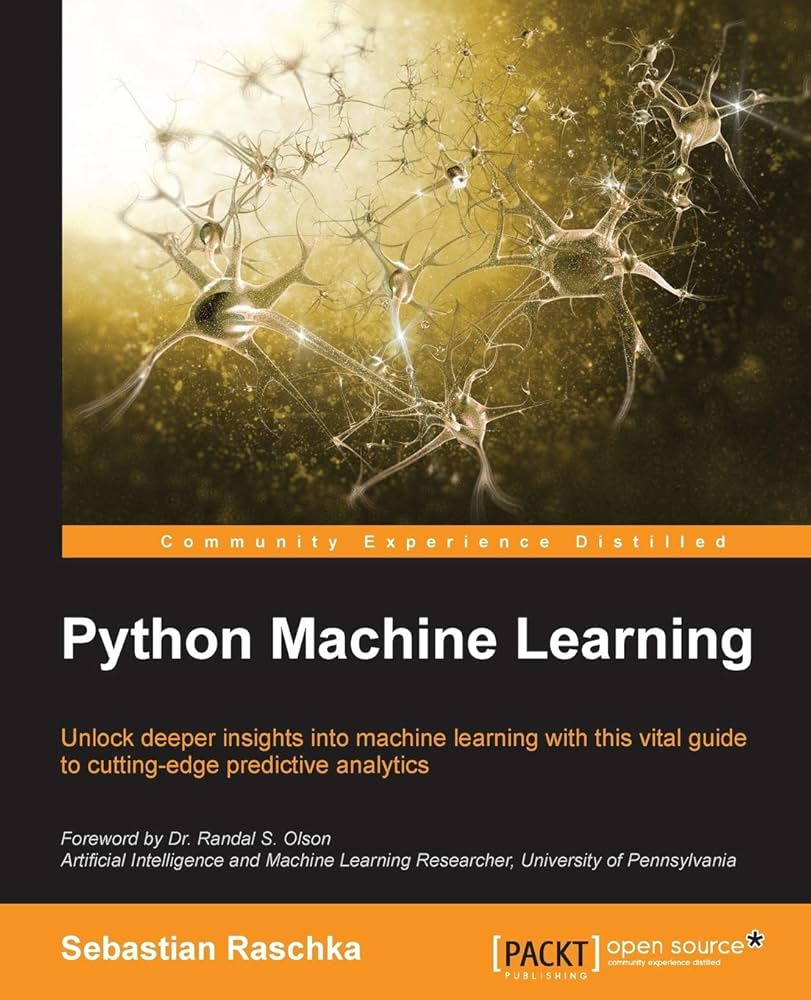

Undergraduate
In 2020, I got accepted to the American University of Armenia where I spent four years pursuing my Bachelor of Science in Data Science degree.
The university is considered the best in Armenia providing the highest quality of education with North American standards.
I was not only equipped with technical knowledge but also developed important soft skills that have shaped who I am today.
One interesting fact about me is that I always face new challenges with full energy and solid preparation, ready to take on anything.
But once I realize things aren’t as tough as I expected, I tend to relax a bit too much. That’s what happened to me in my undergrad.
Eventually, I saw a slight decrease in productivity and performance in the middle of the program.
But when it comes to group assignments, I naturally take charge, feeling responsible for everyone and pushing the team forward rather than holding it back.
Thanks to that, I’ve never got less than a perfect grade on any group project.
Regarding my overall performance, at some point, I immediately regroup, refocus, and end up doing even better than before.
It’s a bit of a parabola-like performance, but at the end I always end up right at the top.
Achievements:
- Got accepted to the university with SAT Math 800 and Toefl 94.
- Landed three contract-based data scientist jobs offerred by three different university professors (two industry projects and one academic) as a result of my excellent performance, professionalism and clear communication skills.
- Graduated with a cumulative grade point average of 3.7 out of 4.


 
